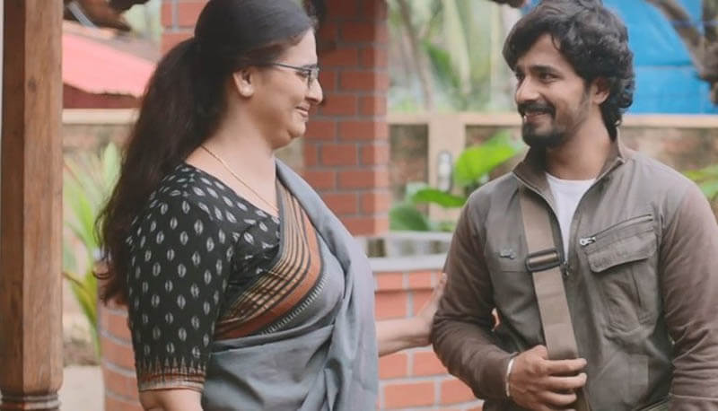

Dia: A Must Watch Heartwarming Film That Will Make You Cry

Posted By : Jithin J Prasad | Date : 31-05-2020
Have you ever watched a Good film and said to yourself that you should have never watched it, and at the same time it would have been a mistake if you have missed it? Well Dia is one of that kind.
Directed by K.S.Ashok Dia,is basically the story of a introvert girl named Dia who tries to open up to her crush Rahul who happens t be her super senior,and from the trailer itself you should have guessed that there's another guy too... so could it be a triangular love story?? or could it be the fact that Rahul and Dia never even got a chance to speak up to each other except for in Dia's dreams?? or may be perhaps it's because Rahul dumped Dia, right?? Well you never know until of course you watch the entire movie, and trust me when I say what ever the reason is, it's crafted in a beautiful and yet different manner that you will not hit the stop/pause/fast forward button after 20-25 minutes into the film.
Yeah like I said above,it could take up to 25 minutes to get the momentum,but once it did, oh boy... damn it's going to get interesting with frames where you could not only see the romance between couples but the love that a Mother is having for her Son and the Son to his Mother as well.

There is also another important note that I should mention that is,there are a few or may be no Indian Romantic films without songs other than Dia. That's right there's no songs in this film only the background scores and trust me it worked well.Also ever hear of Butterfly effect? Well it's not technically used in this film like Khamal Hassan sir's Dashavataram but the concept might have had an effect in the plot(Spoiler alert, but don't worry you would not find it easily since it's not based on Butterfly effect).
The film might be having some flaws but then again those mistakes so narrowed down that you would not even notice them in the first place. The bright sides include The Direction,The Narration, The Cast even though most of the cast are fresh faces their efforts paid off well,Music in the background, and special mention "The Cinematography in Dia", I mean how could they do it? Yeah it's a "they" since there are two people,Vishal Vittal and Sourabh Waghmare, they manged to do it so perfectly that it looks simple but at the same time,you cannot achieve that much of simplicity with ease. Well Conclution in 2018 we had KGF from Kannada film Industry and in this year(2020) it's Dia's turn,both are impeccable in their respective senses.
Dia hit the theaters on February 7th 2020, yeah that's right a week ahead of Valentine's Day, and is now available in various OTT platforms, you can check everything about the film including all avilable ratings,reviews,places to watch from,etc.. shortlisted in once place from here:Dia (film).
Also another special mention, if more films like Dia,Unda,Jallikattu,Super Deluxe ,Badhaai Ho,etc.. gets more recognition then, Since this year's Oscar made a difference by nominating a non English film in major categories and that movie being swiped the most number of Oscars, even Indian films such as these might have a potential to at least get nominated.This is just my opinion.
Watch the Malayalm Review Here
Watch the Trailer Here